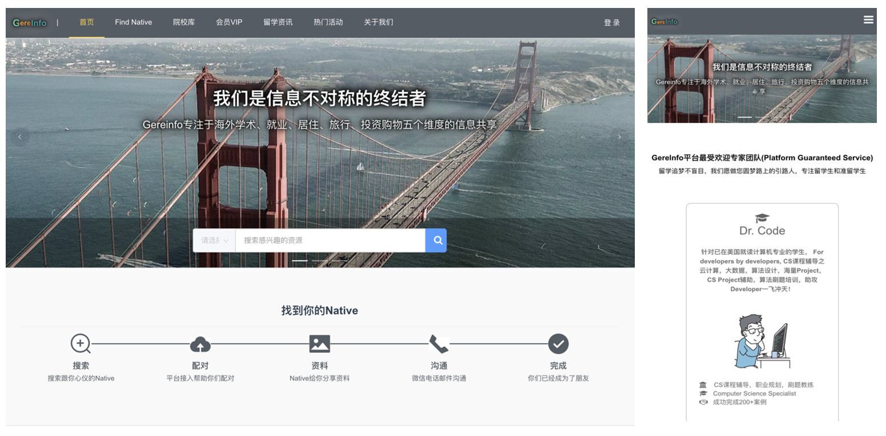
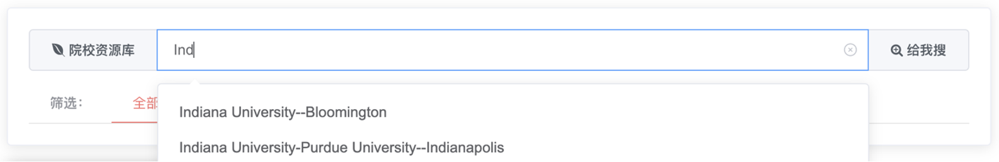
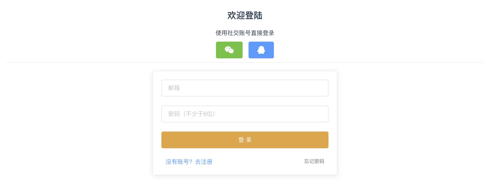

In order to allow students to conveniently, truthfully, and timely understand unbiased information and make the most rational judgments independently, we have built this platform. Some predecessors who have attended the dream schools of students are also willing to share their experiences or provide help for students onboarding. Students can also find their own mentors on this platform. The purpose of this platform is to break the information asymmetry, build a communication framework and starting point for students and mentors matched by their target regions, interests, and hobbies. Of course, a secure payment methods is also provided to make the interaction between both parties safe with the help of the platform.
In terms of investment, housing, recreation, academics, and daily life, students can be matched with mentors based on their own needs. At the same time, news and event promotions for targeted regions can be provided and pushed to them.
The problems of this website is like the chicken or the egg problems, which requires a sufficient number of mentors to attract enough students, and at the same time, a sufficient number of students are needed to attract enough mentors. Without a large amount of funding for marketing, it is difficult to generate a significant amount of natural traffic. The outbreak of the epidemic caused many Chinese students to give up or postpone their plans to study abroad, making it even more difficult to promote the website.
SpringBoot, VueJS, bootstrap
We used the latest version of bootstrap (https://getbootstrap.com) to implement the whole website. All the pages will adapt to whatever device client is using and get the best visualizations.

The single page (SPA) technology is also used in our website. The SPA is the technology that can dynamically reload the content in the current page. By utilizing the SPA, the refresh of the entire page will not happen. The needed information will only be added as necessary such as user input and etc. The none-change part (like the logo, banner and the menu) of the page will not be refreshing again and again which can save a lot of traffics.
In order to let the users get the search results faster, I implemented autocomplete in the search box

However, there exists some issues with the auto complete. For instance, if the server responds to the auto-completion every time that user input a character, that will make hundreds of requests which is not necessary and resource consuming. Thus, I set a 100ms delay for making requests. In other words, if user is continuously typing, the client will not send any request to the server.
Single sign-on (SSO) is a technology which combines several different application login screens into one. With SSO, a user only has to enter their login credentials (username, password, etc.) one time on a single page to access all of their SaaS applications.

If one request for all the data, the initial load would super slow, bad user experience If one request only requests one page’s date, user will not have a smooth switch between pages.
Solution: Find a golden ratio, request, e.g. 10 pages per time, so user can smoothly switch between 1 - 10 page, and the initial load won’t be too slow, when user go to the 11th page, another request will be sent.
Using the Google Analytic Track for details on user usage for better knowing the performance of our website.